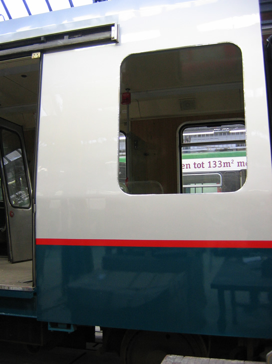
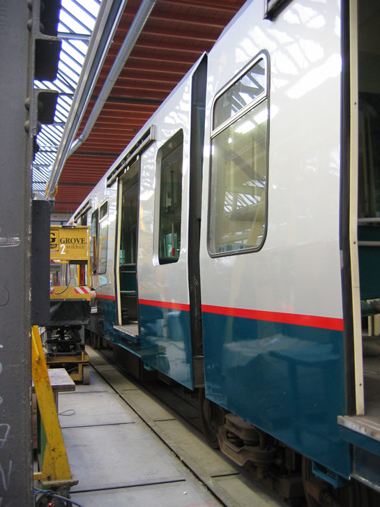
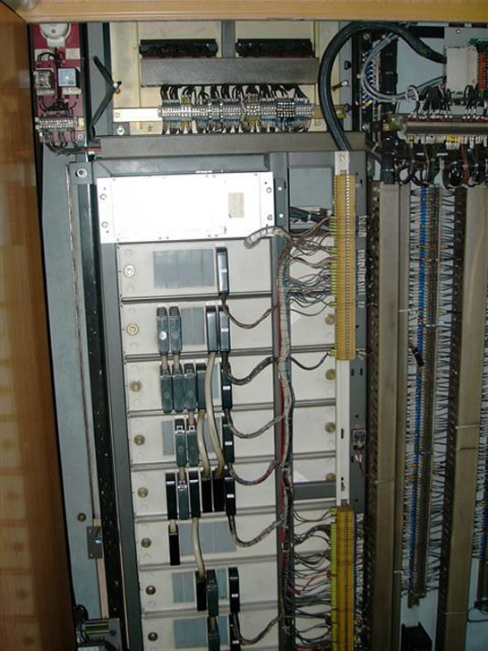

5217 bijna hersteld en ander nieuws...
- vrijdag 05 december 2008 17:05
- Geschreven door Joachim
Het metrorijtuig (5217) dat op 25 oktober 2005 bij een aanrijding met een vrachtwagen zwaar beschadigd raakte, is de afgelopen weken op de Centrale Werkplaats Kleiweg hersteld. Naast de schade aan de voorkant van het rijtuig, werd een deel van de zijkant opnieuw ingebouwd, daar de brandweer dit deel verwijderd had om de chauffeur van de vrachtwagen te bevrijden uit zijn benarde positie ten tijde van het ongeval.
Het is nog niet bekend wanneer rijtuig 5217 gereed is voor transport naar lijnwerkplaats Waalhaven. Hieronder enkele foto's van de herstelde zijkant.
Foto's met dank aan Marvin v/d Sloot /  OV Digitaal
OV Digitaal

De beschadigingen zijn hersteld en een verse laklaag inclusief rode streep maakt het weer een net metrorijtuig.

Over de gehele lengte zijn de beschadigingen hersteld. Op sommige plaatsen ontbreken de deuren en ramen, deze worden er uiteraard nog ingezet.
 Bekijk: "5217 ontspoort bij aanrijding met vrachtwagen..."
Bekijk: "5217 ontspoort bij aanrijding met vrachtwagen..."
RandstadRail-rijtuigen
Gisteren zijn de rijtuigen 5264 en 5268 overgebracht naar lijnwerkplaats Waalhaven, alwaar de ATB-installatie van deze rijtuigen omgebouwd zal worden, zodat vanaf augustus 2006 veilig gereden kan worden op het RandstadRail-tracé tussen station Hofplein en Den Haag Centraal. Een ombouw van de ATB-installatie is noodzakelijk, omdat de ATB-installatie op het Nederlands spoorwegnet in grote mate afwijkt van het ATB-systeem van de RET. De nieuwe ATB-installatie van de rijtuigen zal getest worden op een deel van emplacement Waalhaven. Wanneer deze tests goed verlopen, begint de ATB-ombouw van de andere rijtuigen 5261 t/m 5271.
Foto met dank aan  Jeepie.nl
Jeepie.nl

Dit is de inhoud van de ATB-kast van een rijtuig Type T. Deze wordt geheel omgebouwd en aangepast, zodat veilig gereden kan worden op het toekomstig RandstadRail-tracé.
Wegdekonderhoud President Rooseveltweg
Deze winter worden er wegwerkzaamheden uitgevoerd op de President Rooseveltweg in Rotterdam-Ommoord. Dit betekent dat deze verkeersader elke keer in fasen wordt afgesloten. Op dit moment is de weg tussen de kruising met de metro en de rotonde met de M.L. Kingweg afgesloten. De gehele weg is tussen deze locaties afgegraven. Om de veiligheid te waarborgen bij de kruising met de metro, is tijdens de werkzaamheden een veiligheidsman van de RET aanwezig.